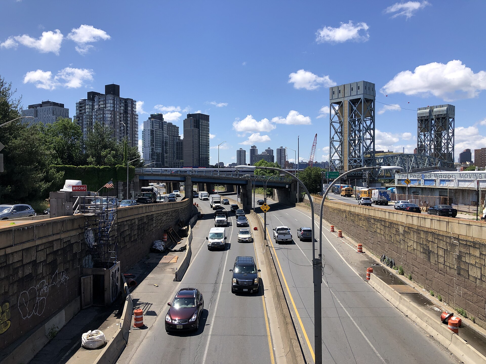
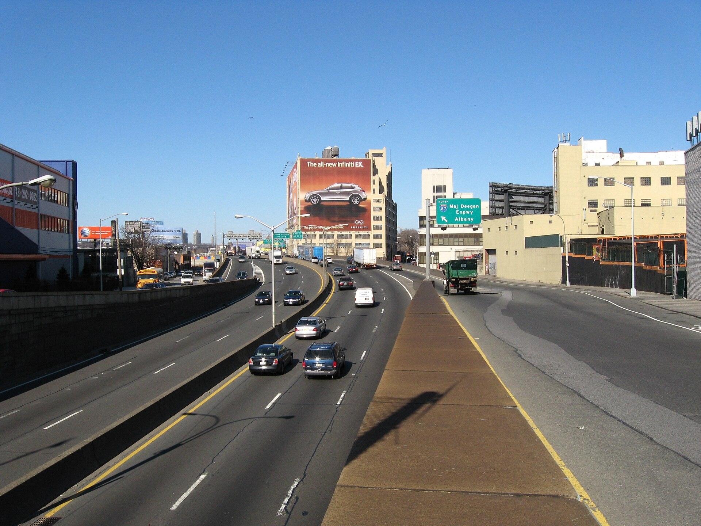

1. Introduction and context
The paid zone begins at 60th Street. On 5 January 2025 the Metropolitan Transportation Authority started charging most vehicles that entered local Manhattan streets at or below that line. Drivers who stayed on the FDR Drive or the West Side Highway did not pay, and the agency counts those free entries separately. The official story is about cleaner air and lighter traffic inside the cordon. The datathon prompt asked a harder question about the South Bronx: did congestion pricing eliminate pollution, or did it move pollution.
Mott Haven sits about four miles north of that line. East 138th Street runs along the Major Deegan Expressway (I-87) through a neighborhood that already carries one of the city’s highest asthma burdens. The Congestion Relief Zone file names seven detection regions. The Bronx is not one of them. A driver on the Deegan at 138th Street crosses nothing, is charged nothing, and is counted by nothing in that dataset.
The zone boundary suggested a possible detour through the Bronx. Our MTA crossing comparison found no clear relative increase at the four covered Bronx-adjacent crossings. A separate official highway appendix, checked in October 2026, estimates Major Deegan traffic down 0.94% and trucks down 0.29% in 2025 versus 2024. The air studies disagree: the community sensor study estimates an adjusted network increase, while NYC Health’s integrated-monitor study finds no significant pricing-related PM2.5 change at the environmental-justice sites it evaluated. These findings do not establish a boroughwide increase or its cause.
The unresolved question is why some community sensors estimated increases when these vehicle totals did not rise. Counts do not measure emissions: vehicle types, speeds, idling and routes can change, and heating, cooking, construction, regional smoke and air movement can affect concentration. We have not identified which explanation applies. The next analysis needs calibrated air readings and local traffic behavior over matching dates and places. Meanwhile, historical vulnerability, tree inventory and geometry help us choose places to inspect for shade and greenery; they do not prove a congestion-pricing effect or funding eligibility.
2. Data and methods
Every number in this paper comes from a primary SODA pull reduced in our pipeline, or from a published result that we transcribed with a citation. We computed no air-quality effect of our own. Derived tables live in data/derived/. Sources and coverage windows are listed in data/SOURCES.md.
2.1 Primary datasets
MTA Congestion Relief Zone Vehicle Entries (NY State Open Data t6yz-b64h) is a 10-minute file of detection group, region, vehicle class, and time period. Our pull runs from 5 January 2025 through 5 September 2026. Calendar 2025 supplies headline entry totals. The named detection-group inventory and vehicle-class profiles use the retrieved file, January 5, 2025–September 5, 2026; this longer window supplies the overnight-share comparison. This file begins on the first tolled day. It contains no pre-toll observations. Any before-and-after test computed inside it compares tolled days to other tolled days. We use it descriptively only.
MTA Bridges and Tunnels Hourly Crossings (ebfx-2m7v) supplies the limited crossing comparison. We build a monthly facility panel from 2023 onward, with annual totals back to 2019. The outcome is the year-over-year change in the log of monthly vehicles. Differencing year over year removes each facility’s own seasonal pattern. Displayed coefficients use 100 × (exp(coefficient) − 1), a percent relative change in the year-over-year growth factor, treated versus comparison. They are not exact percentage-point differences in raw annual growth.
NYC DOT Automated Traffic Volume Counts (7ym2-wayt) is the street-level test. Each row is a 15-minute vehicle count at a segment and direction. These are rotating short-duration studies, not a continuous panel. We reduce each site-period to a median complete-weekday 24-hour volume and pair sites to themselves on segment identifier and direction. The South Bronx sample that design produces is empty. That emptiness is reported as a result.
Building footprints (OTI 5zhs-2jue) and the 2015 Street Tree Census (uvpi-gqnh) supply canyon geometry and the corridor tree inventory inside a Mott Haven bounding box. We fit a 1,618 m centerline to 83 street-tree positions on East 138th Street, project footprints onto that axis, and cut the corridor into 120 m segments.
Neighborhood Financial Health (r3dx-pew9, year published 2020) and the Heat Vulnerability Index (4mhf-duep) supply the equity overlay. Site geography is PUMA 3710 (Hunts Point, Longwood and Melrose; Bronx Community Districts 1 and 2) and ZCTAs 10451, 10454, 10455, and 10459. Census Reporter and the ACS API without a key were blocked. We do not depend on them.
2.2 Difference-in-differences
The specification uses facility fixed effects, month fixed effects, and treated-by-relative-month interactions indexed to January 2025, with December 2024 omitted as the reference. The window is January 2024 through December 2025. Bronx-adjacent treated crossings are the Robert F. Kennedy Bridge Bronx approach, the Bronx-Whitestone Bridge, the Throgs Neck Bridge, and the Henry Hudson Bridge. Controls are three crossings far from the cordon with no plausible toll-avoidance route through it: the Verrazzano-Narrows Bridge, the Cross Bay Bridge, and the Marine Parkway Bridge. That comparison uses 168 facility-months across 7 clusters.
A null is only interesting if the method can see an effect. We therefore run the identical specification on the two cordon-crossing tunnels, the Queens Midtown and the Hugh L. Carey, against the same three far controls (120 facility-months, 5 clusters). Standard errors are CR1 cluster-robust by facility. Because the cluster count is small, the pooled p-value comes from an exact wild cluster bootstrap with Rademacher weights. With G clusters that bootstrap has a floor of 1/2^(G−1), which is 0.016 for the Bronx comparison and 0.062 for the cordon comparison. We report the floor.
2.3 Street geometry and planning rates
Facade-to-facade width is the sum of median north-side and south-side offsets in the 6-to-30 m fronting band (116 buildings). Height comes from the modeled height_roof attribute, not a surveyed parapet. Segments with fewer than three fronting footprints are dropped, which is why ten of fourteen possible 120 m bins are reported. The project uses a dimensionless height-to-width ratio of 0.5 as an initial airflow-review threshold. It is a design assumption, not a locally validated boundary between safe and harmful canopy. Facade gap is not measured curb or sidewalk space.
The particle-removal calculation is an illustrative multiplier model, not a field i-Tree Eco run or a dispersion model. An assumed 180 trees with 7 m mature crown diameter supply about 6,927 m²; 40,000 ft² of wall supplies 3,716 m² weighted at 0.5; and 8 acres of roof supplies 32,375 m² weighted at 0.35. The resulting 20,116 effective m² × a historical NYC PM2.5 rate of 0.24 g/m²/year yields 4,828 g/year, or 10.6 lb/year for the complete program. Trees alone yield about 3.7 lb/year. Wall and roof weights and planting capacity are unvalidated. The NO2 rate is a US-average proxy, and the O3 rate is untraced; neither supports a conservative-bound claim. Mass removed per year does not predict concentration change in µg/m³, so the earlier 8–15% concentration-reduction claim is withdrawn.
2.4 Air studies, transcribed and not averaged
We transcribe four published air results into data/derived/published.json and keep them separate. They measure different things over different windows with different designs. Averaging them would invent a number that no study estimated. The MTA Open Data team warned that air quality is not an MTA-provided correlation and that weather and wind-direction controls are required. That modeling is present in the work we cite and absent from ours, so we cite rather than assert.
t6yz-b64h nor ebfx-2m7v observes the Major Deegan, the Bruckner, the Cross Bronx, or local Mott Haven streets. The Bronx DiD speaks to tolled crossings, not to free roads. The CRZ overnight gap has no pre-period. Our saved rotating-DOT pull supplies no eligible local pre/post panel; a newer official highway appendix separately reports paired annual Deegan estimates. PUMA income is coarser than the East 138th design strip.
3. Results
3.1 Twelve entry-detection groups; no Bronx category
In calendar 2025 the Congestion Relief Zone recorded 178,203,234 paid entries and 23,461,361 excluded-roadway entries. Those entries arrive through twelve named detection groups categorized into seven regions: Brooklyn, East 60th St, FDR Drive, New Jersey, Queens, West 60th St, and West Side Highway. The Bronx region list is empty. East 60th Street is the largest entry group (44,990,691 entries), followed by the FDR Drive entry group at 60th Street (30,746,213 paid entries plus 17,684,944 excluded-roadway entries).
A driver entering Manhattan below 60th Street from the north crosses one of the 60th Street gates or the FDR and West Side Highway gates. A driver on the Major Deegan at 138th Street does not appear in this file at all. Figure 1 counts named detection groups, not vehicles or physical gantries. A Bronx driver can still pay upon entering the Manhattan zone. No Bronx category does not mean no Bronx traffic or no air-quality benefit.


3.2 Trucks overnight more than cars (cross-sectional)
Multi-unit trucks take 31.8 percent of their entries overnight. Cars take 19.7 percent. The 12.1-point gap lines up with a schedule whose overnight rate is a fraction of the peak rate. Hour-of-day profiles show the shape: multi-unit truck share peaks in the 5 a.m. and 6 a.m. hours and holds an elevated floor through the small hours, while car share collapses overnight. With tens of millions of rows the chi-square p-value is approximately zero for any difference at all. Cramér’s V is 0.0185. The share gap is the result. The p-value is not.

3.3 Bronx bridges: no clear relative increase, with limited precision
Raw 2024-to-2025 changes at Bronx-adjacent facilities are small: RFK Bronx +0.13 percent, Bronx-Whitestone +1.62 percent, Throgs Neck +0.14 percent, Henry Hudson +0.28 percent. Each of those changes is smaller than the change at Marine Parkway, a comparison bridge in southern Queens farther from the paid-zone boundary; comparison status does not prove it was unaffected. Systemwide volume rose 0.17 percent.
| Facility | Group | 2024 | 2025 | Change |
|---|---|---|---|---|
| RFK Bridge Bronx | Bronx-adjacent | 52,506,343 | 52,574,751 | +0.13% |
| Bronx-Whitestone | Bronx-adjacent | 49,893,667 | 50,700,608 | +1.62% |
| Throgs Neck | Bronx-adjacent | 45,182,230 | 45,245,619 | +0.14% |
| Henry Hudson | Bronx-adjacent | 25,243,179 | 25,313,379 | +0.28% |
| Queens Midtown Tunnel | Cordon-crossing | 30,433,062 | 30,024,381 | −1.34% |
| Hugh L. Carey Tunnel | Cordon-crossing | 22,626,078 | 21,981,320 | −2.85% |
| Verrazzano-Narrows | Far control | 81,000,607 | 81,160,067 | +0.20% |
| Cross Bay | Far control | 7,774,075 | 7,823,341 | +0.63% |
| Marine Parkway | Far control | 7,994,115 | 8,113,733 | +1.50% |
| System total | 339,772,310 | 340,352,556 | +0.17% |
Source: ebfx-2m7v, reduced in data/derived/bt.json. RFK Manhattan (+1.73 percent) is uptown, not in the Bronx treated set.
The pooled difference-in-differences estimate for Bronx-adjacent crossings versus far controls is −1.04 percent, 95 percent CI [−3.63, +1.61], wild cluster bootstrap p = 0.49 (t = −0.78, 168 facility-months, 7 clusters, 128 bootstrap draws). Mean absolute pre-period coefficient is 1.24 percent, which is the noise floor of the design. The post-period mean is −1.29 percent. The treated-minus-control gap does not open upward after January 2025. The only individually significant post-toll months are February 2025 at −5.20 percent and April 2025 at −4.53 percent, both negative, and both within the range of month-level swings already present before the toll.
The same specification on cordon-crossing tunnels versus the same controls gives −2.29 percent, 95 percent CI [−3.39, −1.18], p = 0.0625 (t = −4.03, 120 facility-months, 5 clusters). January 2025 is −9.18 percent, CI [−11.33, −6.98]. The pooled p-value is exactly the bootstrap floor for five clusters. The negative estimate is consistent with reduced tunnel growth, but the interval and bootstrap p-value use different inference methods. Five clusters limit certainty; p = 0.0625 does not meet a 5 percent bootstrap threshold. The Bronx estimate does not establish a relative increase.

3.4 The DOT coverage hole
Tolled crossings are not surface streets. We went to 7ym2-wayt because that is the source that could, in principle, observe the Major Deegan or Bruckner Boulevard. After requiring a complete 24-hour day, weekdays only, and the same segment and direction on both sides, the Bronx yields two pairs and zero that bracket 5 January 2025. Citywide the file yields 28 usable pairs, 13 of which bracket the toll start. The South Bronx sample is empty, so no Wilcoxon test was run on it.
The saved rotating-study archive did not supply eligible matched observations on both sides for these corridors. This is a limitation of that pull and design, not proof that no agency counted the roads. East 138th Street has counts in 2015 and 2016 only. The Major Deegan has pre-toll counts on two segments and a post-toll count on a third. Pairing by street name would compare different roadway segments. Pelham Parkway segment 9008825 is a duplicated record with flipped direction labels. Bruckner Boulevard segment 9014571 has a genuine 2018-versus-2025 repeat whose only complete 2018 days are a Saturday and a Sunday. Both would have produced a confident false finding. We discarded them.
NYC DOT’s street-level counts neither support nor refute diversion into the South Bronx. Instrumenting those corridors is cheaper than anything in Part 2, and it is the precondition for ever evaluating it.
New official highway check. NYC Health’s August 2026 Detailed Traffic Analysis Methodology appendix reports Major Deegan annual-average daily traffic of 129,955 vehicles/day in 2024 and 128,727 in 2025 (−0.94%); trucks were 10,326 and 10,296/day (−0.29%). Station MTA Site C / NYSDOT 010021 (01S000001) covers I-87 from the Willis Avenue overpass to East 138th access. These are seasonally adjusted estimates from periodic weekday counts, not continuous measurements of every local road or emissions at the community network’s unpublished maximum location. Official appendix, Tables A-1 and A-2.
3.5 Four air studies, kept apart
Cornell, npj Clean Air. Fraser et al. estimate a 22 percent reduction in daily-maximum PM2.5 inside the Congestion Relief Zone relative to a modeled no-toll counterfactual over the first six months, equal to −3.05 µg/m³ against a 13.8 µg/m³ baseline, with −1.07 µg/m³ across the five boroughs and −0.70 µg/m³ metro-wide, alongside an 11 percent traffic reduction. This is a daily-max result inside the zone. It is not a citywide annual-mean statement.
Research Square difference-in-differences preprint. Goldberg et al., Variable Short-Term Air Quality Impacts of New York City’s Congestion Pricing Policy, report daily-average PM2.5 coefficients in concentration units: Queensboro −9.08 µg/m³, Williamsburg +6.30 µg/m³, Cross Bronx +3.74 µg/m³ and Broadway / West 35th +2.46 µg/m³. The model subtracts the seasonal pre/post change in July 2023–June 2024 from the corresponding change in July 2024–June 2025, splitting at January 5. All six sites’ raw January–June averages fell: a positive adjusted coefficient means less improvement than the counterfactual. Queens College and Manhattan Bridge had no clear adjusted change. The preprint is not peer reviewed; these are separate site tests, not percentages or raw annual differences.
South Bronx Unite with Columbia, Brown, and CU Boulder. De Jesus et al.’s public abstract, Impacts of New York City’s Congestion Pricing Policy on PM2.5 in the South Bronx: Evidence from a Community-Managed Air Sensor Network, analyzes hourly readings from 19 of 65 monitors, January 2024–December 2025. Generalized additive mixed models adjust for seasonality, temperature, humidity, wind and residential heating, with monitor random effects and autocorrelation. The estimated network step increase is +0.22 µg/m³ (95 percent interval +0.12 to +0.32 µg/m³), and the maximum highway-adjacent estimate is +1.29 µg/m³ (interval +0.85 to +1.70 µg/m³). Four highway-adjacent monitors had significant increases, two monitors had significant decreases, and thirteen had no clear change. The maximum monitor’s address and reference concentration are unpublished; we cannot locate it at East 138th, calculate its percentage increase or call it a measured Deegan change. The study was undergoing peer review.
NYC DOHMH. Using integrated NYCCAS monitors over one year with the Van Wyck Expressway as a non-affected control, the health department finds no statistically significant congestion-pricing-attributable change at either the CRZ or environmental-justice highway corridors. Traffic accounts for roughly 14 percent of NYC PM2.5 emissions and 20 percent of NOx emissions. Those citywide emissions shares are not source shares for an individual monitor or a direct bound on local concentration changes.
These studies use different metrics, locations, periods and models. We report each separately. The bridge comparison does not establish a Bronx traffic increase; the air studies do not establish a single cause for local changes. The South Bronx abstract also reports significant decreases at two monitors, so “no Bronx improvement anywhere” is unsupported.
3.6 Asthma, money, and heat on the same map
Hunts Point and Mott Haven adult asthma emergency department visits run 193.5 per 10,000 residents against 66.4 citywide. For children aged 5 to 17 the rate is 266.2 per 10,000 against 143.7 citywide. PM2.5-attributable child asthma emergency visits are 147 per 100,000 against 62 citywide. The portal reports 18% neighborhood vegetative cover in 2017 and 23.4% citywide tree canopy in 2021. Different years and cover definitions make these context figures unsuitable for a direct canopy-gap calculation.
The historical Neighborhood Financial Health file (published 2020, mixed underlying dates) reports median income of $15,510 and poverty of 29.3% for PUMA 3710, Hunts Point, Longwood and Melrose. It ranks 51st of 55 PUMAs on overall financial health. The $31,238 income comparator and 20.3% poverty comparator are unweighted means of the 55 PUMA values, not citywide household-level estimates. This larger geography supplies vulnerability context; it does not describe every household beside East 138th or identify where pricing changed pollution.

Health, historical income and heat vulnerability justify asking where residents have fewer buffers against environmental burdens. They do not establish that the Manhattan fee caused those burdens. Missing a Bronx category in the zone-entry file is only a geographic feature of that file; newer official highway counts now provide a separate Deegan traffic check.
3.7 East 138th Street: nine segments versus one
The modeled street geometry varies along the corridor. Facade-to-facade width is about 40.3 m. Median roof height in the fronting band is 50.3 ft. The corridor median height-to-width ratio is 0.38. Cut into ten 120 m segments, the ratios run from 0.08 at the eastern end to 0.58. Nine of the ten sit below 0.5. Exactly one sits above it, a 120 m stretch about three-quarters of the way east, where median roof height rises to 58.7 ft and the street narrows to 30.6 m. The next-highest segment reads 0.46.
H/W below 0.5 passes our initial geometry screen; H/W above it prompts airflow review. No dispersion model or field measurement here proves that a dense canopy improves or worsens local exposure. The 2015 census records 81 living trees on the corridor band, about 5.0 per 100 m, median trunk diameter 8 inches. Only two of those trees fall inside the airflow-review bay. The single London planetree on the band is not one of them. The Bronx already has trees. The innovative part is the typology, not the invention of greenery.



4. Design implication: two horizons
The street changes block by block, so the design changes block by block. We did not decide what East 138th needed and then look for data that agreed. We modeled geometry from footprints, found that it changes along the fitted axis, and used it to identify survey priorities. The width is an inferred facade gap, not a field measurement of planting space.
4.1 Near term: inspect archived planting gaps
The 2015 Street Tree Census supplies living-tree positions; Building Footprints supplies modeled roof heights and footprint offsets. The fitted analysis axis spans about 1,618 m. Four of fourteen possible roughly 120 m bins lack three fronting footprints and were omitted. Ten retained bays contain 70 trees, averaging seven per bay. Six bays—3, 4, 5, 9, 11 and 12—have fewer than seven trees and modeled H/W below 0.5. Bay 10 has H/W 0.58 and needs airflow review. Green means a survey candidate; it does not mean planting is approved.
H/W is roof height in meters divided by inferred facade-to-facade width in meters. It has no units and is not surveyed curb space. The old proximity-based planting order is withdrawn because the South Bronx maximum monitor’s location is unverified. No safe spacing in meters has been calculated. Current tree inventory, utilities, access, soil, ownership and airflow must be checked before specifying planting quantities or wall vegetation.
An earlier scenario assumed 180 trees, 40,000 ft² of green wall, 8 acres of green roof and 36 rain gardens. Its modeled totals were about 10.6 lb/year PM2.5 removal and 7.2 million US gallons/year stormwater retention. These are assumptions for that complete program, not measured benefits or verified local capacity. A mass-removal estimate cannot predict a concentration reduction in µg/m³. Existing Parks, DOT and DEP programs do not establish funding for this site.
4.2 Long horizon: a compact garden above the Deegan
The new interactive 3D concept uses an assumed 240 m × 34 m deck, about 2.02 acres, above six traffic lanes. It has a 30 m roadway and 6.6 m underside clearance, with supports outside the lanes. It is a representative straight bay rather than surveyed highway geometry. Ramps, changing grades, foundations, utilities, access and emergency requirements may change or prevent this arrangement.
Klyde Warren Park’s original 5.2-acre Dallas deck opened in 2012 and cost about $110 million. Its landscape study estimated annual tree carbon sequestration and measured cooling during one summer week; it did not establish a measured PM2.5 percentage reduction. A Deegan deck would change where exhaust leaves the road, with possible exposure increases at portals. Structural and dispersion assessments, coordination with road owners, environmental review and funding precede any construction schedule. The earlier 12.9-acre cost and removal scenarios do not price or validate this compact model.
5. Discussion and limits
The prompt offered two stories. We found a third. Fraser’s model estimated an air-quality benefit inside the paid zone, while NYC Health’s different analysis found no significant pricing-attributable change. The South Bronx was never inside that line. A DiD that can see a January drop at the paid-zone tunnels does not see a post-toll increase at Bronx-adjacent crossings. The community study reported increases at four highway-adjacent South Bronx monitors, without publishing the maximum monitor’s address. Those two facts can sit next to each other without being forced into a single diversion headline.
Our MTA model does not observe local South Bronx traffic, and our saved DOT pull cannot form a matched local pre/post panel. The newer NYC Health appendix does report paired highway estimates, including a slight Deegan decrease. It still cannot identify emissions at every community monitor. The maximum monitor’s unpublished address, differing air-sampling methods and missing matched speed/idling records prevent a confident explanation of the community study’s increase.
Other limits follow from the files. The CRZ overnight result is cross-sectional. The Bronx interval includes small effects. Published air studies differ in methods and findings and should not be averaged into one effect. i-Tree pounds are planning rates. PUMA 3710 is larger than East 138th Street. The 2015 tree census is a baseline, not a current inventory. The Deegan deck cost band is an order-of-magnitude reading of other U.S. decks, not an engineer’s estimate for I-87.
What we do not claim is as important as what we do. We do not claim congestion pricing diverted traffic into the South Bronx. We do not claim the South Bronx is unaffected. We do not claim a causal air-quality effect of our own. We do not claim the green corridor offsets highway emissions. We do not claim the garden deck is next year’s Parks contract.
Du Bois’s future-city passage supplies a design ambition: more gardens and shared green space. It does not establish an empirical pollution result. The practical next step is to inspect the archived planting gaps and validate the ranking inputs. A compact Deegan garden deck remains a concept to investigate, with engineering, ventilation and portal exposure assessment before any source-control or construction claim.
References
- Fraser, Timothy, et al. “A first look into congestion pricing in the United States: PM2.5 impacts after six months of New York City cordon pricing.” npj Clean Air 1, 39 (2025). https://www.nature.com/articles/s44407-025-00037-2
- “Variable Short-Term Air Quality Impacts of NYC Congestion Pricing.” Research Square preprint (December 2025). https://doi.org/10.21203/rs.3.rs-8158429/v1
- South Bronx Unite, with Columbia University, Brown University, and CU Boulder. “South Bronx study shows slight increase in air pollution post-congestion pricing” (2026). https://www.southbronxunite.org/press-and-media/slight-increase-in-air-pollution-post-congestion-pricing
- New York City Department of Health and Mental Hygiene. Congestion Pricing Air Quality Report. https://a816-dohbesp.nyc.gov/IndicatorPublic/data-features/congestion-pricing-report/
- New York City Environment and Health Data Portal. Hunts Point–Mott Haven neighborhood report, Asthma and the Environment. Neighborhood report
- Metropolitan Transportation Authority. Congestion Relief Zone Vehicle Entries Beginning 2025. NY State Open Data t6yz-b64h. data.ny.gov/t6yz-b64h
- Metropolitan Transportation Authority. Bridges and Tunnels Hourly Crossings. NY State Open Data ebfx-2m7v. data.ny.gov/ebfx-2m7v
- New York City Department of Transportation. Automated Traffic Volume Counts. NYC Open Data 7ym2-wayt. data.cityofnewyork.us/7ym2-wayt
- New York City Office of Technology and Innovation. Building Footprints. NYC Open Data 5zhs-2jue. data.cityofnewyork.us/5zhs-2jue
- New York City Department of Parks and Recreation. 2015 Street Tree Census. NYC Open Data uvpi-gqnh. data.cityofnewyork.us/uvpi-gqnh
- New York City Neighborhood Financial Health Digital Mapping and Data Tool. NYC Open Data r3dx-pew9 (year_published 2020). data.cityofnewyork.us/r3dx-pew9
- New York City Department of Health and Mental Hygiene. Heat Vulnerability Index by ZCTA. NYC Open Data 4mhf-duep. data.cityofnewyork.us/4mhf-duep
- Nowak, D. J., Hirabayashi, S., Bodine, A., and Hoehn, R. “Modeled PM2.5 removal by trees in ten U.S. cities and associated health effects.” Environmental Pollution 178 (2013): 395–402. https://doi.org/10.1016/j.envpol.2013.03.050
- Nowak, D. J., Hirabayashi, S., Bodine, A., and Greenfield, E. “Tree and forest effects on air quality and human health in the United States.” Environmental Pollution 193 (2014): 119–129.
- Metropolitan Transportation Authority. “ICYMI: Less Traffic, Better Transit.” First-anniversary press release. mta.info press release
- Cornell Urban Horticulture Institute. Urban tree species selection guidance. http://www.hort.cornell.edu/uhi/
- Du Bois, W. E. B. “The Negro and the Warsaw Ghetto.” Jewish Life (1950). Quoted for the 2150 New York window, not as a traffic citation.
- New York City Charter §§197-c and 197-d (ULURP). FHWA NEPA procedures and CEQR Technical Manual, as process references for a deck park over a state-owned interstate.